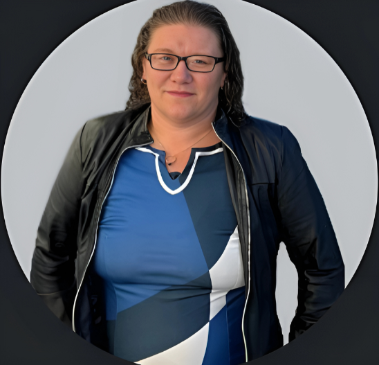

For adults
Linguistic Decoder, Contract Compass, and Anchor represent the adult-facing side of the studio: communication, contracts, continuity, and clearer orientation around information and risk.
Digital ABCs is based in Western Sydney and builds practical AI tools for communication clarity, contract understanding, continuity, and learning. The studio exists because useful technology should help real people make better decisions without asking them to surrender judgement, privacy, or common sense.

Digital ABCs is founder-led by Trish Eastcott, who learned to build software by doing it. No formal computer science path, no padded founder mythology, and no pretending the work happened under easy conditions. The studio grew out of lived pressure, pattern recognition, and a refusal to accept that broken systems should stay broken.
That background shapes the product direction. Adult-facing work focuses on communication clarity, contracts, continuity, and decision support. Children's work moves more slowly because learning and support products need extra consent, supervision, and care.
"Show my children you don't need to sacrifice the relationships with people you love to provide for them."
Digital ABCs is part of a real Western Sydney journey: buying a house without missing her children growing up. That goal forces the business to stay anchored in products that can be trusted, maintained, and sold honestly over time. Every product decision sits underneath that larger test. If a project does not support a real life, it is not the right project.
The studio is not positioning itself as a general service provider. It is narrowing around products that help people understand messages, contracts, life admin, and learning contexts with more structure and less false certainty.
Linguistic Decoder, Contract Compass, and Anchor represent the adult-facing side of the studio: communication, contracts, continuity, and clearer orientation around information and risk.
Social Skill Simulation and future learning products are being shaped with higher-care defaults, adult supervision, and professional review where appropriate.
The studio is built from a lived understanding that time, money, attention, and access are limited. That is why plain language, transparent legal framing, and honest status updates are part of the public product surface.
Pages should say what exists, what is in beta, what is still being built, and what the trust surfaces actually cover.
The site is being repositioned around a focused app studio so the public story matches the work that matters most now.
Growth only counts if it does not cost the relationships the founder is trying to protect while building the business.